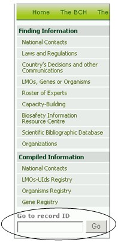
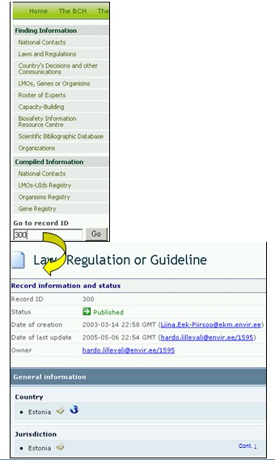

URL: http://bch.cbd.int/database/
The BCH Central Portal provides a quick search facility which allows users to search for specific records by the official ID number that the record has been registered under through the BCH. The Go to record ID search box is located on all pages of the Finding Information section at the bottom of the left hand menu.
Users wishing to access a specific record can enter the record number there and press Go to be taken directly to the record.

Figure 126
Example: A user looking for Record ID 300 will enter 300 in the Go to record ID search box and then press Go.

Figure 127